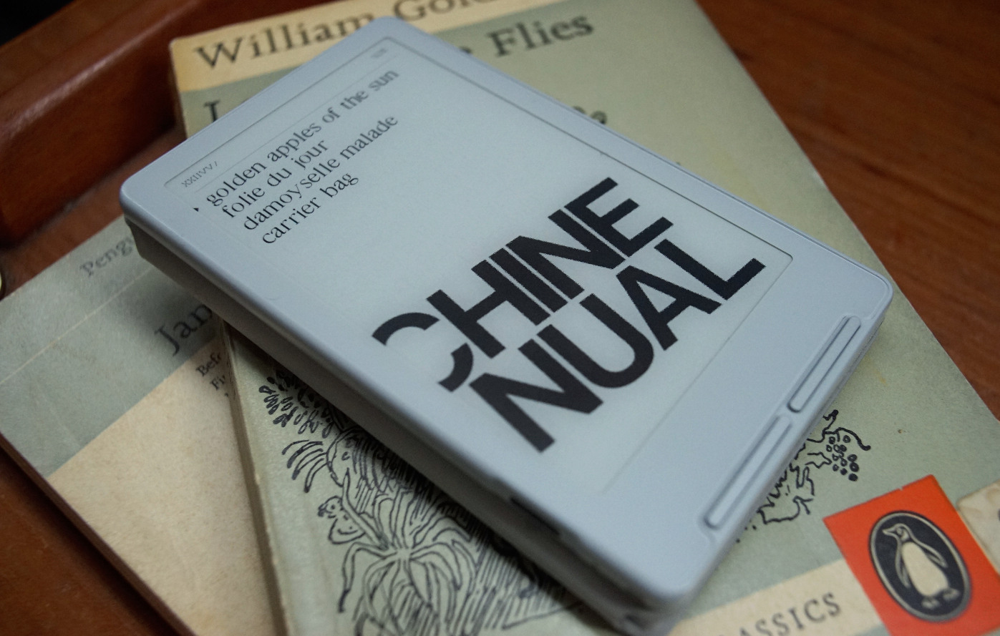

A file viewer firmware for the XTE INK 4.
A little firmware designed to display plain-text and 1-bit images, nothing more. Not having a smartphone or a printer, sometimes I need to take tickets and receipts with me, so I wanted a way to do so with the Xte Ink but didn't like the stock and community firmwares. So I made one!
It reads icn and txt files.
It also remembers your page.
Controls
- Up/Down, selection
- Left, first-page
- A, open
- B, back
Wallpaper
The firmware expects an image named wallpaper3cx64 in the root of the SD Card.
- View Repository, Uxntal
- Video